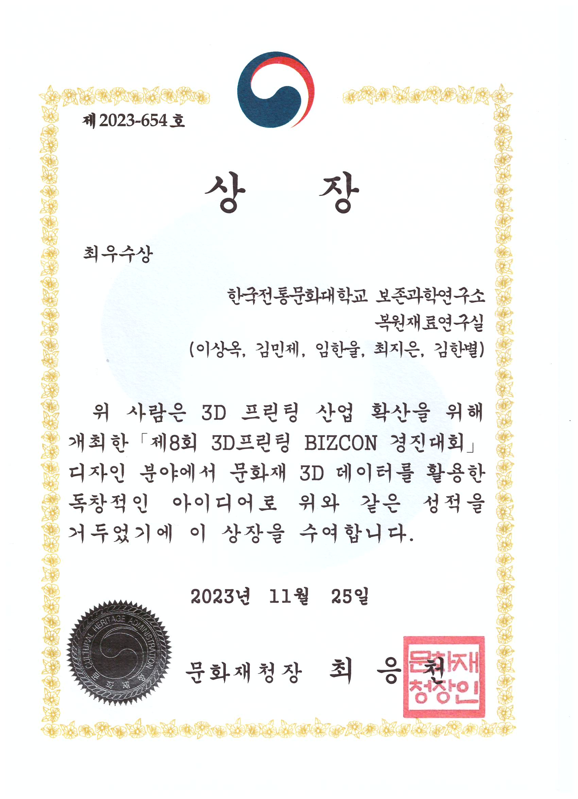

Discover our significant contributions to conservation science through publications, conferences, patents, and awards.논문, 컨퍼런스, 특허, 상 등을 통한 보존과학 분야의 중요한 기여를 확인해보세요.
Applicability Research Restoration Material of Metal PLA Sintering for Contemporary Metal Cultural Heritage금속 PLA 소결을 활용한 근현대 금속 문화유산의 복원 재료 적용성 연구
Scientific analysis of sintered metal PLA samples to evaluate their suitability for restoring metal cultural heritage.금속 PLA 소결 시편의 근현대 금속 문화유산 복원 재료 적합성 평가를 위한 과학적 분석 연구.
Reverse Casting Using Metal PLA 3D Printing: A Study Based on Digital Data of Royal Seals from the National Palace Museum, Korea국립고궁박물관 소장 어보의 디지털 데이터를 활용한 금속 PLA 3D 프린팅 기반 역주조 공법 기초 연구
Feasibility study of metal PLA 3D printing and reverse casting for heritage restoration using royal seal data.어보 데이터를 활용한 금속 PLA 3D 프린팅 기반 역주조 공법의 문화유산 복원 적용 가능성 연구.
A Study on the Prevention of Specular Reflections in 3D Scanning of Glossy Artifacts광택 유물의 3D 스캐닝에서 정반사 방지에 관한 연구
Evaluated material safety and applicability of vanishing scanning sprays for 3D scanning of glossy artifacts.광택 유물의 3D 스캐닝을 위한 자연 소멸형 스캔 스프레이의 재료 안전성 및 적용성 평가.
Hyo Jeong Kim, Min Je Kim, So Yeon Choi, Jeong Eun Oh, Sang Ok Lee김효정, 김민제, 최소연, 오정은, 이상옥
2025
ISPRS Ann. Photogramm. Remote Sens. Spatial Inf. Sci.ISPRS 사진측량 및 원격탐사 공간정보과학 연보
Photogrammetry-Based Monitoring for the Continuous Management of Cultural Heritage: A Case Study of the Petroglyphs of Cheonjeon-ri, Ulju문화유산의 지속적 관리를 위한 사진측량 기반 모니터링: 울주 천전리 암각화 사례 연구
Applied photogrammetry for digital documentation and damage detection monitoring of outdoor cultural heritage sites.야외 문화유산의 디지털 기록 및 손상 감지 모니터링을 위한 사진측량 기법 적용 연구.
Hae Jun Park, Gyu Ri Choi, Jeong Yeon Kim, Sang Ok Lee박해준, 최규리, 김정연, 이상옥
2025
ISPRS Ann. Photogramm. Remote Sens. Spatial Inf. Sci.ISPRS 사진측량 및 원격탐사 공간정보과학 연보
Digital Heritage Documentation and 3D Reconstruction디지털 유산 문서화 및 3D 복원
International Conference on Cultural Heritage Preservation문화유산 보존 국제 컨퍼런스2024
Presentation on advanced 3D scanning techniques for cultural heritage documentation and digital reconstruction methodologies.문화유산 문서화를 위한 고급 3D 스캐닝 기술과 디지털 복원 방법론에 대한 발표.
Best Excellence Award - 8th 3D Printing BIZCON Competition제8회 3D프린팅 BIZCON 경진대회 최우수상
Ministry of Culture, Heritage and Tourism (Cultural Heritage Administration)문화재청2023

Click to enlarge클릭하여 확대
Awarded for excellence in 3D printing business activities, presenting innovative ideas for utilizing cultural heritage 3D data at the design booth of the 8th 3D Printing BIZCON Competition.3D 프린팅 산업 활성화를 위해 개최한 제8회 3D프린팅 BIZCON 경진대회 디자인 부야에서 문화재 3D 데이터를 활용한 독창적인 아이디어로 위와 같은 성적을 거두었기에 이 상장을 수여함.
Excellence in Digital Heritage Award디지털 유산 우수상
International Council on Monuments and Sites (ICOMOS)국제기념물유적협의회 (ICOMOS)2024
Recognition for pioneering work in applying digital technologies to cultural heritage documentation and preservation.디지털 기술을 문화유산 기록 및 보존에 적용한 선구적인 업적에 대한 인정.
Young Conservator Award젊은 보존과학자상
Korean Society of Conservation Science한국보존과학회2025
Click to enlarge클릭하여 확대
Award for outstanding research contributions by early-career professionals in conservation science.보존과학 분야 초기 경력 전문가의 뛰어난 연구 기여에 대한 상.
Best Paper Award in Heritage Science문화유산과학 최우수논문상
Asian Academy of Heritage Science아시아 문화유산과학 학회2025
Best paper award for groundbreaking research on metal conservation techniques for archaeological artifacts.고고 유물의 금속 보존 기술에 관한 획기적인 연구로 최우수논문상 수상.
Method for 3D Printing-based Heritage Restoration3D 프린팅 기반 문화재 복원 방법
Korean Intellectual Property Office한국특허청2024
Patent for innovative 3D printing methodology specifically designed for cultural heritage restoration applications.문화재 복원 응용을 위해 특별히 설계된 혁신적인 3D 프린팅 방법론에 대한 특허.
Non-contact Surface Analysis System for Cultural Heritage문화유산 비접촉 표면 분석 시스템
Korean Intellectual Property Office한국특허청2025
Patent for advanced non-contact analysis system enabling safe and detailed surface examination of fragile artifacts.취약한 유물의 안전하고 상세한 표면 검사를 가능하게 하는 첨단 비접촉 분석 시스템 특허.
Eco-friendly Conservation Material Composition친환경 보존처리 재료 조성물
Korean Intellectual Property Office한국특허청2024
Patent for environmentally sustainable and reversible conservation material suitable for various heritage objects.다양한 문화유산 객체에 적합한 환경 친화적이고 가역적인 보존 재료 특허.
AI-based Heritage Deterioration Prediction SystemAI 기반 문화유산 열화 예측 시스템
Korean Intellectual Property Office한국특허청2025
Patent for artificial intelligence system that predicts and monitors deterioration patterns in cultural heritage objects.문화유산 객체의 열화 패턴을 예측하고 모니터링하는 인공지능 시스템 특허.